Magnum
Magnum Magnum BI documentation
Everything you need to install Magnum BI, describe your data, and build dashboards people enjoy using.
Magnum BI is a lightweight BI tool that installs with one docker compose up or a Helm chart. You write semantic models and dashboards as YAML files; people explore them in a drag-and-drop UI with drill-down, period comparison and one-line embedding. Coding agents can set it up for you, and AI assistants can work in it through its MCP endpoint. The backend is Rust (axum + tokio-postgres), the UI is React, and configuration, dashboards and the query cache live in ScramDB.
Quick start
With Docker (fastest)
All you need is Docker or Podman with Compose (and git). The code is on GitHub at giobinda/magnumbi. Get it and start Magnum BI:
git clone https://github.com/giobinda/magnumbi.git
cd magnumbi
MAGNUM_ADMIN_EMAIL=you@example.com docker compose up -d # UI and API on http://localhost:8000
docker compose logs magnum | grep one-time # your first sign-in's password
docker compose exec magnum magnum-bi seed-sample # sample data for the Sales overview dashboard
docker compose exec magnum magnum-bi demo --months 1 # optional: the NYC demoNo git? Download just the Compose file and run the same commands next to it: curl -O https://raw.githubusercontent.com/giobinda/magnumbi/main/compose.yaml. Or download the whole repository as a ZIP from GitHub (Code › Download ZIP).
Open http://localhost:8000 and sign in with the one-time password; you'll choose your own right away. To pick it up front, set MAGNUM_ADMIN_PASSWORD. The stack runs Magnum BI with its own ScramDB, and the encryption key is generated into the magnum-secrets volume on first start: back it up.
Rather not type anything? Let your AI agent do it. Going to a server or Kubernetes? See Deploying.
Lite: just you, on your computer
No container, no accounts: Magnum BI for one person. It starts its own PostgreSQL in ~/.magnum-bi (downloaded the first time) and opens in your browser. You own everything, in one workspace: connect a database, or CSV and Parquet files through DuckDB, then build models and dashboards as usual.
make lite # from a checkout: builds, then runs magnum-bi lite in your browser
make desktop # or in a window of its own
magnum-bi lite --set-pin # optional: lock it with a PINIt answers only on this computer: it listens on 127.0.0.1 and refuses requests addressed to anything but localhost. The PIN keeps others at this computer out of the app; the data folder itself isn't encrypted, so disk encryption is what protects it at rest. There are no organisations, members or sign-in settings, and no public or guest links. In the window, links elsewhere open in your browser, downloads land in Downloads, and closing it stops everything. It picks its port the first time and keeps it. The window needs the system's web engine: built into Windows and macOS, WebKitGTK on Linux. Lite and the window come in addition to the server, which runs on ScramDB.
The desktop app
Lite in a window, ready to install: from each release on GitHub, a .dmg for macOS (both chips), a .zip for Windows, and a .deb or .rpm for Linux (it needs WebKitGTK 4.1, which the package manager installs: sudo apt install ./magnum-bi_*.deb or sudo dnf install ./magnum-bi-*.rpm). Open it from the menu, the Applications folder or the .exe. It keeps everything in ~/.magnum-bi, like magnum-bi lite, and opening it twice shows where the first one is.
Opening an unsigned app. The builds aren't signed (signing costs a yearly fee to Apple and to a certificate seller), so macOS and Windows ask the first time. They're built in the open by the desktop workflow from the tagged source, and each release lists their checksums in SHA256SUMS.
- macOS: drag Magnum BI to Applications and open it. macOS says it can't check it: choose Done, then System Settings › Privacy & Security › Open Anyway. Or, in Terminal:
xattr -dr com.apple.quarantine "/Applications/Magnum BI.app". - Windows: unzip it and open
magnum-bi.exe. At "Windows protected your PC", choose More info › Run anyway. It uses WebView2, which Windows 10 and 11 have. - Linux: nothing to confirm.
The desktop build is the app only: on Windows its commands print nothing (there's no console behind the window). For the server, use the container.
From source
For development. You'll need Rust 1.94+, Node 20+, Podman or Docker (for the local ScramDB) and the system's OpenSSL development library (for passkeys). Then:
git clone https://github.com/giobinda/magnumbi.git && cd magnumbi
make install # frontend dependencies
make db-up # local ScramDB on 127.0.0.1:55432
make seed # sample_sales demo table (≈46k rows)
echo 'MAGNUM_SYSTEM_OWNERS=you@example.com' > .env.local
make key # generates MAGNUM_SECRET_KEY
make user EMAIL=you@example.com # choose a password
make dev-backend # API on :8000
make dev-frontend # UI on :5173 (in another terminal)Open http://localhost:5173 and sign in. The Sales overview dashboard runs on the sample data — try clicking a region to drill into its stores.
Useful commands
| Command | What it does |
|---|---|
make serve | Builds everything and runs one process serving the API and UI on :8000. |
docker compose up -d --build | Runs the packaged stack from your checkout instead of the published image. |
make check | Validates your project files (models, blends, themes, dashboards). |
make test | Backend tests, frontend typecheck and frontend tests. |
make test-db | Also runs the tests that need ScramDB (and PostgreSQL, if configured). |
make org-db ORG=acme PORT=55433 | Gives an organisation its own local ScramDB. |
make demo [ORG=globex] [MONTHS=13] | Loads the NYC taxi × weather demo in one step. |
acme), then give it a database with make org-db or Database › Set… on that page.Set up with a coding agent
Magnum BI is built to be installed and configured by coding agents such as Claude Code, Cursor or Codex. It ships as one Docker image with a Compose file and a Helm chart, the repository has an AGENTS.md with the house rules and every command, and every setting is an environment variable or a YAML file. An agent can go from an empty folder to a running demo with almost no help.
Copy this prompt into your agent. It checks for Docker, starts Magnum BI with its own ScramDB, loads the NYC demo and gives you the URL and your first sign-in. It asks before installing or downloading anything, and falls back to building from source if Docker isn't an option.
Set up Magnum BI on this machine: clone the repository, read AGENTS.md and README.md, and follow the quick start.Project layout
Your content lives in project/. Keep it in git.
project/
models/*.yaml # semantic models: dimensions, measures, drill paths
blends/*.yaml # models joined on shared fields, across connections
dashboards/*.yaml # dashboards seeded on first start (file name = id)
themes/*.yaml # optional extra themes
access.yaml # optional: initial organisations and members
backend/ # Rust API server and CLI
frontend/ # React + Vite + ECharts
devtools/ # local ScramDB containers
Dockerfile, compose.yaml # the image and a one-machine stack
deploy/helm/magnum-bi/ # the Helm chart
AGENTS.md # the guide for coding agents (CLAUDE.md imports it)UI, code & API
Magnum BI is designed so you can pick the right tool for each job without creating two versions of the truth. The web interface is just a client of the HTTP API, and changes from files, clicks and scripts are all validated by the same server code.
What you can manage where
| Object | Web UI | YAML in git | API / CLI |
|---|---|---|---|
| Models | ✓ Data › Models (no SQL): Org admins their own, system owners the platform's | ✓ project/models/ (the platform's); setup as code for your own | ✓ /api/org-models/{name}; read: GET /api/models |
| Dashboards | ✓ Designer + YAML view | ✓ dashboards/ (seeded on first start) | ✓ /api/dashboards/{id}, …/yaml, …/history |
| Blends | ✓ Blends page | ✓ blends/ | ✓ /api/blends/{name} |
| Themes | ✓ Pick; Org admins: Themes editor, CSS export/import | ✓ project/themes/; an organisation's: themes.yaml | ✓ /api/org-themes; read: GET /api/themes |
| Connections | ✓ Connections page, with Test | ✓ setup as code (connections/, secrets apart) | ✓ /api/connections/{name}, …/test |
| Members, roles, filters | ✓ Members page | ✓ setup as code (members.yaml); access.yaml on first start | ✓ /api/members |
| Organisations | ✓ Organisations page | access.yaml (initial setup) | ✓ /api/platform; CLI magnum-bi org set-database |
| Accounts | ✓ Members, Security | — | CLI magnum-bi user set-password | disable | enable |
| API tokens | ✓ Security › API tokens | — | ✓ /api/tokens |
| Sign-in policies | ✓ Organisations › Sign-in, Members › Sign-in | ✓ an organisation's: setup as code (sign_in.yaml) | ✓ /api/members/sign-in, /api/platform |
How consistency is kept
- One store per object. Dashboards are stored as YAML text. The designer and the YAML view are two views of the same thing: saving in either updates both.
- Same validation everywhere. A dashboard, blend or connection is checked identically whether it's saved from the UI, a file or the API. Invalid changes are refused with an explanation.
- History. Every dashboard save is kept as a version with its author, whichever way it was made.
- Checked before deploy. Run
magnum-bi check(ormake check) in CI to validate the project's models, blends, themes and dashboards before they go live, andmagnum-bi code planfor an organisation's setup. - Metrics in code. The platform's models are YAML in git, so the meaning of a shared metric changes through review. Organisations' own models are made in the app (no SQL) and can be exported and applied as code too.
Using the API
The API lives under /api on the same address as the UI. Scripts, CI jobs and agents use an API token (Authorization: Bearer mbi_…, see AI agents & MCP); the browser uses its session. Your role applies to the API exactly as it does to the UI.
H='Authorization: Bearer mbi_…'
curl -H "$H" -D headers.txt https://bi.example.com/api/dashboards/sales_overview/yaml > sales_overview.yaml
# …edit the file…
curl -H "$H" -X PUT --data-binary @sales_overview.yaml \
'https://bi.example.com/api/dashboards/sales_overview/yaml?dry_run=1' # warnings, nothing saved
curl -H "$H" -X PUT -H 'If-Match: <version>' --data-binary @sales_overview.yaml \
https://bi.example.com/api/dashboards/sales_overview/yaml # 409 if someone changed it meanwhilemagnum-bi code export, plan and apply sync its connections, models, members, dashboards, reports and more with a folder of YAML files. See Your setup as code. The project's dashboards/ and access.yaml are only loaded on first start.Models
A model describes one table: which columns you group by (dimensions), which numbers you add up (measures), and how to drill (hierarchies). The platform's models are YAML in git or made in the app by system owners; each organisation's Org admins can also make their own in the app.
On Data › Models, Org admins (and, in the platform workspace, system owners) make a model with no YAML and no SQL:
- + New model, then pick a connection and one of its tables.
- Magnum BI proposes the model from the table's columns: text and dates become dimensions, numbers summed measures, ids and calendar numbers (hour, month, year) stay dimensions, and a count of rows is always there.
- Adjust the names, what each column is used as and how it adds up, then Save model. Saving checks every field against the table's real columns.

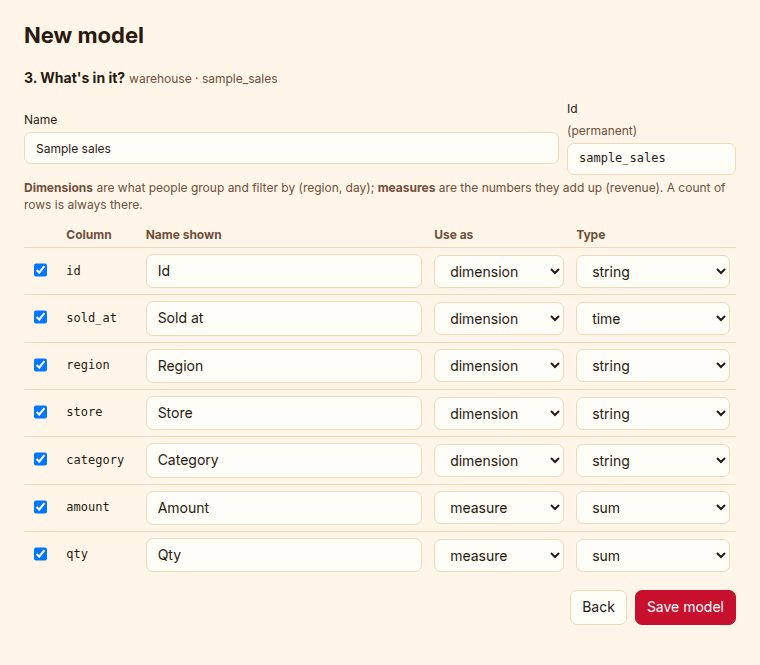
sample_sales table, ready to adjust and save.Starter dashboard, next to any model, makes a first dashboard from it in one click.
name: sales
connection: warehouse # each organisation's own "warehouse"
table: sample_sales # unqualified: the connection decides where
dimensions:
- {name: sold_at, type: time} # string | number | boolean | date | time | datetime
- {name: region}
- {name: store, aggregation: count_distinct}
measures:
- {name: revenue, type: sum, sql: amount, format: currency}
- {name: transactions, type: count}
- {name: units, type: sum, sql: qty}
- {name: revenue_per_unit, type: formula, formula: revenue / units} # see Formulas
hierarchies:
location: [region, store] # drill path
cache: 15m # optional- A model can
extends:another and add fields. SQL written inside a model (sql:) is trusted configuration. - Queries support time grains (
sold_at:month), ad-hoc aggregations (sum(amount),count_distinct(store)), filters, Top/Bottom N, and sorting by change (-revenue__change). Only declared fields can be queried, and every value is safely escaped. - An organisation's own models go through the API too:
PUT /api/org-models/{name}(with?dry_run=1), the same shape without SQL.
Models made in the app
- No SQL, by design: a dimension is a column, a measure is a count, distinct count, sum, average, min or max of a column.
- Shared models: made by system owners in the platform workspace, a model is one of the platform's, like the YAML ones (shared master data, say). Every organisation allowed it on Settings › Organisations uses it on its own connection of the same name, with its own data. An organisation's own model of the same name keeps it there.
- Admins only (Org admins for their organisation, system owners for the platform), because a model makes a table visible to everyone it reaches. Restrictions follow the data: a rule on a model also covers any model made in the app on the same table. A model on a different table or view is different data, so check restrictions after adding one.
- Works with ScramDB, PostgreSQL, DuckDB and BigQuery connections, and its blends can join it.
warehouse decides where the data really is, so the same model serves everyone from their own data.Get started
Until the essentials are set up, the home page shows a Get started checklist, worked out from what is really there: for system owners (secret key, https, a first organisation, its database and its admin) and for Org admins (connect data, a model, a first dashboard, your team, and optionally your colours, single sign-on, email and webhooks). Each step links to where it's done and to its guide, and Show me opens the page and points at the control to use.
Tours
At their first sign-in in an organisation, everyone is asked whether they'd like a one-minute tour. Balloons next to the controls show a dashboard's period, filters and drill-down, then what their role adds: downloads, schedules, editing, Explore, the chat and, for Org admins, the Data and Settings menus. Taking it, skipping it or Don't ask again stops the question; Not now asks again at the next sign-in, and Tour next to your name runs it any time (GET/PUT /api/tour).
The top bar groups the pages: Chat, Discover (dashboards, Explore, the catalog), Data (connections, models, blends) and Settings (members, organisations, themes, email and webhooks, chat settings, usage, code). Each person sees only what their role can use.
Formulas
Formulas are calculations written like a spreadsheet, of three kinds:
- On totals, a measure:
(revenue - cost) / revenue,sum(amount) / count_distinct(store),if(units > 0, revenue / units, null). You can filter, sort, rank (Top N) and compare periods with it: with a comparison, each measure it uses is taken from the right period. - Per row, a field of each row, from its columns:
amount * qty,if(amount * qty > 500, 'large', 'small'),concat(region, ' / ', category). Group by it, filter on it, or add it up (sum(line_total), in a chart or a formula on totals). - On a chart's results:
running_sum(revenue),moving_avg(revenue, 3),revenue - previous(revenue),rank(revenue),percent_of_total(revenue). They run after the chart's query, on the rows it returns, on your organisation's ScramDB, so changing one never queries the warehouse again while the result is cached.
- In Discover › Explore, click ƒ New formula next to Measures (on totals), or ƒ New field next to Dimensions (per row).
- Name it, and build it by clicking the model's measures, its columns (as Σ aggregations) and the functions, or by typing. It's checked as you type, and a mistake is shown where it is (unknown field "revnue"; did you mean revenue?).
- Add puts it in your chart. Click its ƒ to change it.

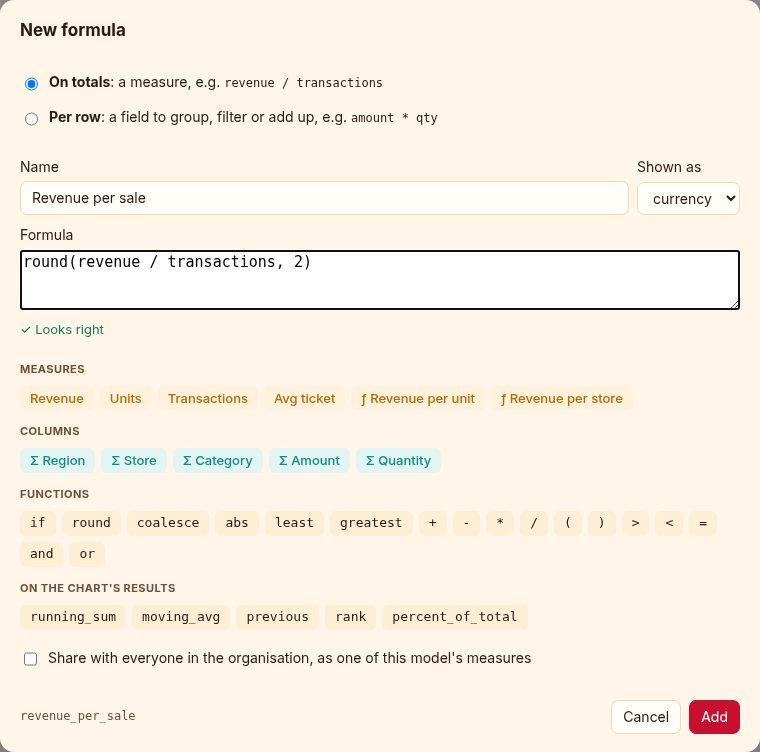

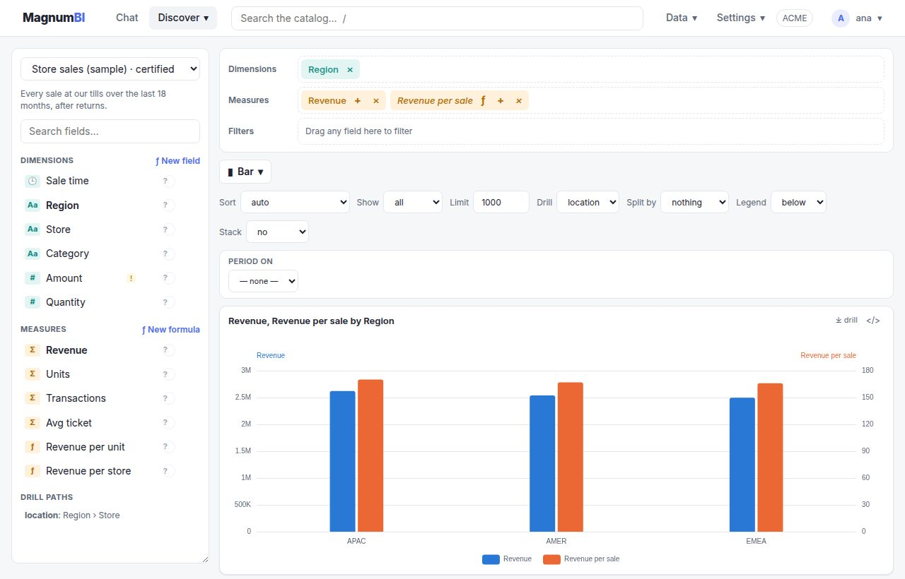

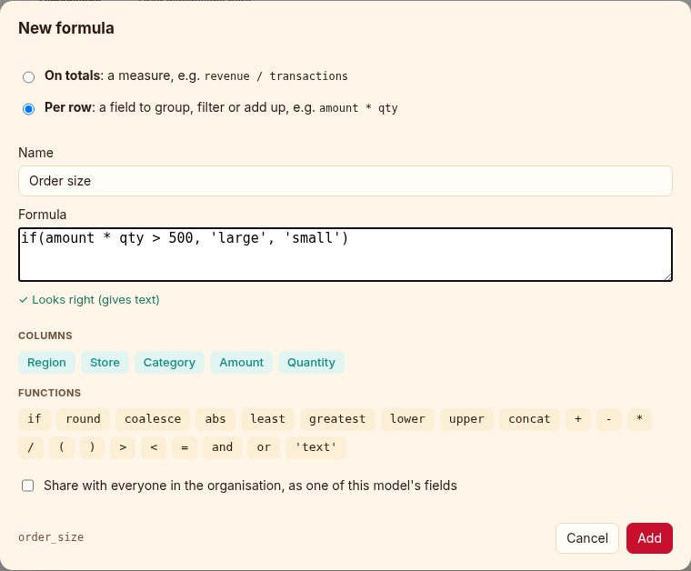

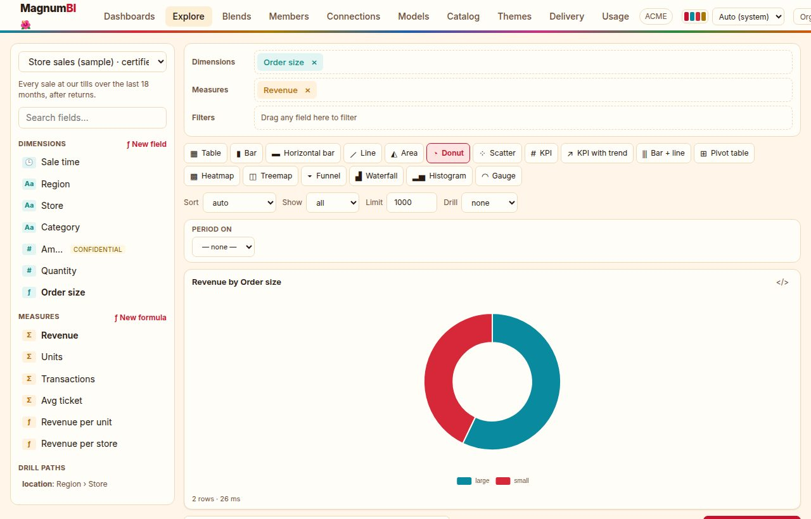

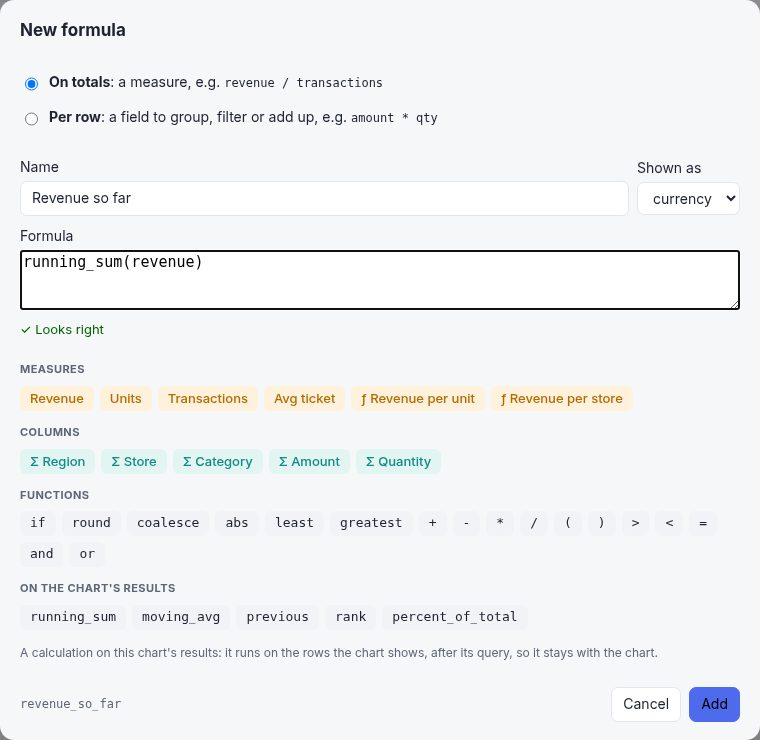

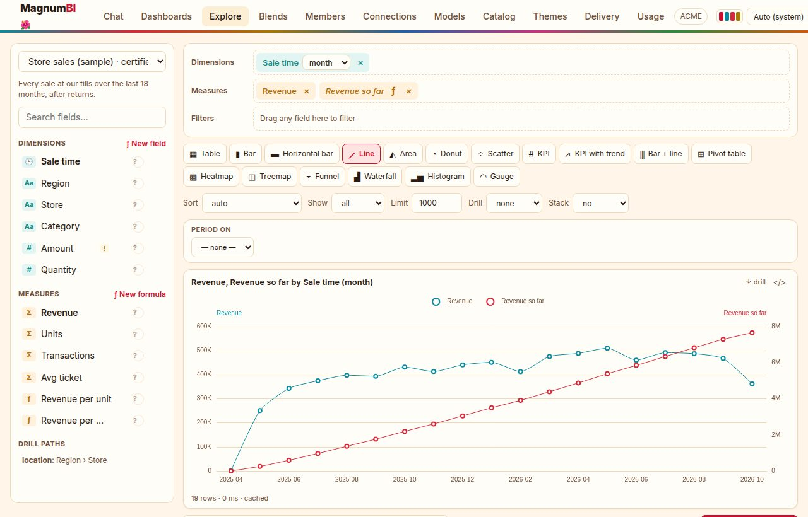
Shared formulas: Org admins can tick Share with everyone in the organisation, or use Data › Models › Shared formulas. A shared formula becomes one of the model's measures (or fields, per row) for the whole organisation, marked ƒ in the field list.
dimensions:
- {name: line_total, type: number, formula: amount * qty} # per row; type: what it gives
measures:
- {name: revenue_per_unit, label: Revenue per unit, type: formula, formula: revenue / units, format: currency}query:
model: sales
dimensions: [region]
measures: [revenue]
formulas: # each one is a column too
- {name: per_sale, label: Per sale, expr: "round(revenue / transactions, 2)", format: currency}
- {name: size, expr: "if(amount * qty > 500, 'large', 'small')", per_row: true} # a field: list it in dimensions to group by it- Shared formulas:
GET /api/formulas,PUTandDELETE /api/formulas/{model}/{name}(Org admins;?dry_run=1to check only).POST /api/formulas/checkwith{model, expr, per_row?, formulas?}says what's wrong and where (and, per row, what it gives). - Agents pass
formulasto the MCPrun_querytool the same way.
The language
- Fields: on totals, the model's measures (and other formulas) by name, and columns through an aggregation:
sum,avg,min,max,count,count_distinct, e.g.avg(amount). Per row, the row's columns by name (number, text and yes/no columns; dates not yet: group bysold_at:monthand the like). - Text in single quotes (
'EMEA','it''s'), compared with=and<>;lower,upper,concat. - Operators:
+ - * /, brackets, comparisons (= <> < <= > >=) andand,or,not. Dividing by zero gives an empty value, not an error, and never rounds to whole numbers. - Functions:
if(condition, then, else),coalesce(x, 0),round(x, places),abs,least,greatest. Alsotrue,falseandnull. - No SQL: a formula is parsed, and only the model's fields, numbers and these functions reach the database, written for its engine (ScramDB, PostgreSQL, DuckDB, BigQuery). So formulas are safe for anyone who explores, and the model's data restrictions apply as always.
- On results:
running_sum,moving_avg(x, rows)andpreviousgo along the first date dimension (or the first dimension), separately for each value of the others: revenue so far, per region.rank(1 for the largest) andpercent_of_totalgo across the other dimensions, within each value of the first: each region's share of each month. They work on the rows the chart shows (after its limit or Top N), use measures (shown or not), stay with their chart (not shared, nor a model's), and can't be filtered on yet; charts can sort by them. They work on blends too. - Formulas on totals and per row work on models; on blends, not yet.
Data catalog & governance
Each model has, in each organisation, an owner who answers for it, stewards who look after its documentation, and a status: certified, draft or deprecated, with a note saying why (or what to use instead). Its documentation says what the model and each field mean, other words people use for them, examples, classification tags, and the glossary terms they implement.
Discover › Catalog lists every model you can see, with its owner, stewards and status. The owner and Org admins see Edit.

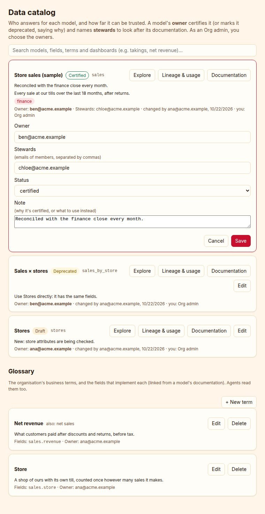
The status shows next to the model in Explore's model picker. A deprecated model also shows its note there, and a warning on every dashboard that uses it.
Documentation (for the model's stewards, its owner and Org admins) edits the description and tags of the model, and of each field its description, other names, examples, tags and glossary terms. A description written here replaces the model's own for your organisation; other names and tags add to it.

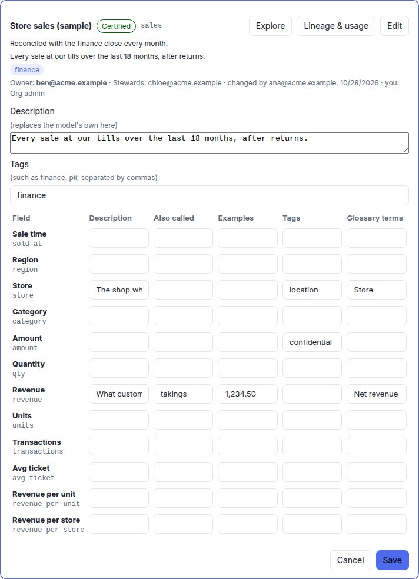
In Explore, the ? next to every field opens what the catalog says about it: its meaning, other names, examples, tags, and the glossary terms it implements with their definitions. The field search finds fields by their other names too (search for "takings" and Revenue comes up), and fields tagged pii, personal, confidential or restricted are marked with a !.

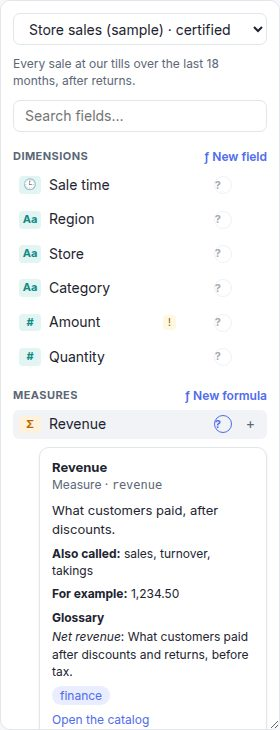
The Glossary, at the bottom of the Catalog, holds the organisation's business terms, each with the fields that implement it.
Search, at the top of the Catalog, finds models, fields, glossary terms and dashboards by their names, the other words people use for them, their tags and their descriptions: "takings" finds Revenue.

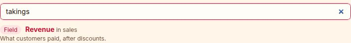
Lineage & usage, on every model, shows what it reads, which dashboards, tiles, scheduled reports, blends and shared formulas use it, where each field is used (and which fields no dashboard uses), and how many queries it served, for how many people, in the last 30 days.

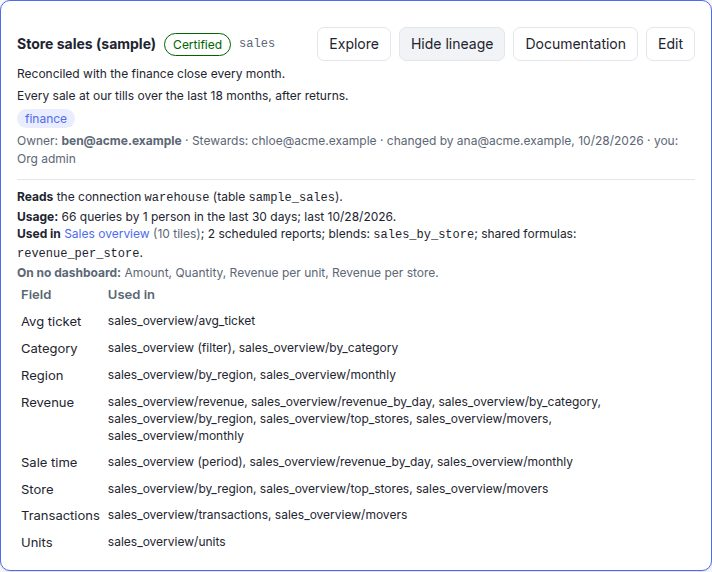

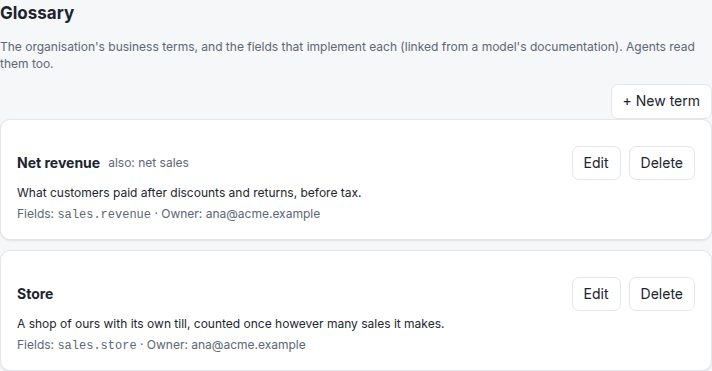
{"owner": "ben@acme.example", "stewards": ["chloe@acme.example"],
"status": "certified", "note": "Reconciled with the finance close every month."}measures:
- {name: revenue, type: sum, sql: amount, synonyms: [sales, turnover], tags: [finance]}{"description": "Every sale at our tills, after returns.", "tags": ["finance"],
"fields": {"revenue": {"description": "What customers paid, after discounts.", "synonyms": ["takings"],
"examples": ["1,234.50"], "tags": [], "terms": ["Net revenue"]}}}
{"name": "Net revenue", "definition": "What customers paid after discounts and returns.", "synonyms": ["net sales"]}GET /api/governance: every model you can see, with its governance and where you stand (admin,owner,stewardorreader). Each model inGET /api/modelscarries itsgovernancetoo, and so do MCP'slist_modelsanddescribe_model: agents are told to prefer certified models and avoid deprecated ones. Models come with the documentation merged in (descriptions,synonyms,examples,tags,terms);GET /api/governancehas each organisation's owndocs, as written.GET /api/glossary(and MCP'sget_glossary): the terms, with the fields that implement them. Writes take?dry_run=1.GET /api/catalog/search?q=takings(and MCP'ssearch_catalog, which agents use to find the right measure for a question) andGET /api/catalog/{model}/lineage. A model's table appears in its lineage only for those who may see SQL.
Who decides
- Org admins (system owners in the platform workspace) decide everything, and are the only ones who give a model a new owner.
- The owner sets the status and note and names the stewards. An organisation's own model belongs to whoever made it; a platform model has no owner until an Org admin names one.
- Stewards (and the owner, and Org admins) write a model's documentation; everyone else reads.
- A glossary term belongs to whoever added it: its owner and Org admins change or remove it. Terms are added by Org admins and by whoever owns or stewards a model.
- Tags are information only: they don't hide anything from anyone. Documentation is shown as plain text, never as HTML.
- Ownership isn't a role: any member can own or steward a model, a viewer included. Owners and stewards must be members of the organisation. Each organisation keeps its own, in its own database.
Chat
People ask their data questions in plain words, and get an answer with the chart it's based on. The chat can also prepare dashboards, scheduled reports, alerts and formulas, which are made only when the person confirms them. It uses your organisation's own AI provider: Magnum BI includes no AI of its own, and you choose the provider, the model and the key.
- An Org admin opens Chat, then Chat settings: picks a provider (OpenAI, Anthropic, Mistral, any OpenAI-compatible API, or your own server such as Ollama), the model and the key, and switches the chat on.
- Everyone in the organisation finds Chat in the menu, with suggested questions built from the catalog. Start here when I sign in makes it their start page (an Org admin can make it everyone's).

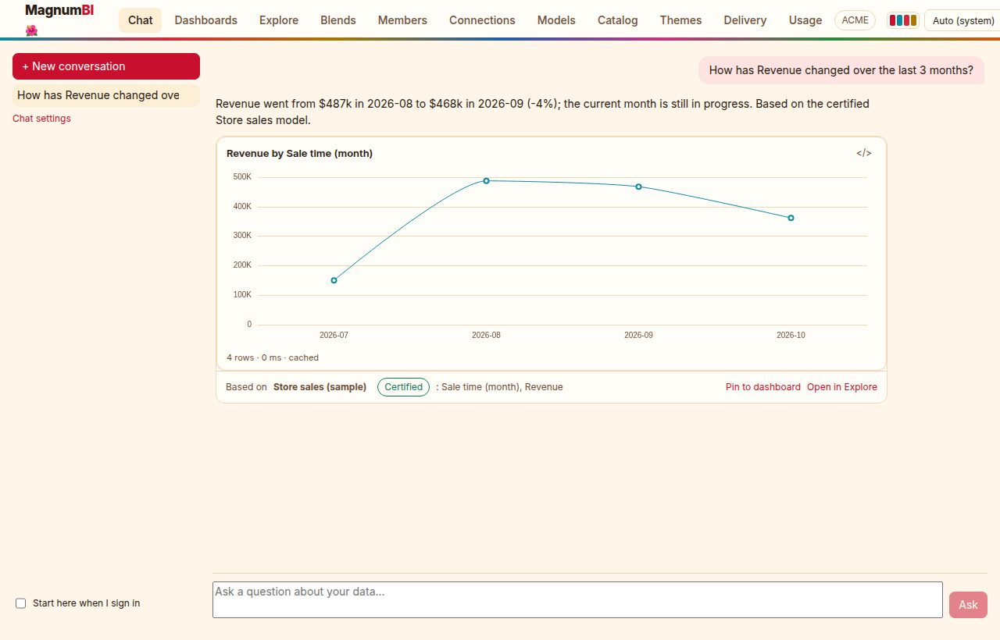
Every answer with numbers shows the chart they come from, the model (and whether it's certified) and the fields, with Pin to dashboard and Open in Explore. When the chat suggests a change, it shows it first:

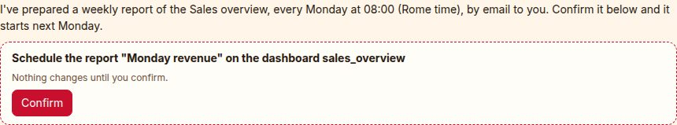

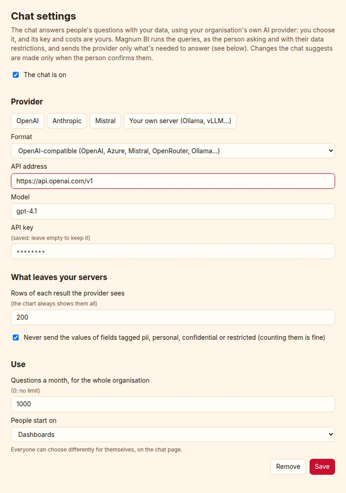
{"settings": {"enabled": true, "format": "openai", "url": "https://api.openai.com/v1", "model": "gpt-4.1",
"monthly_questions": 1000, "rows_to_model": 200, "keep_sensitive": true, "home": "dashboards"},
"key": "sk-…"}{"message": "How has revenue changed over the last 3 months?", "conversation": null}
→ {"conversation": "…", "reply": {"text": "…", "charts": [{"query": {…}}], "proposals": []}}formatisopenai(any OpenAI-compatible API: OpenAI, Azure OpenAI, Mistral, OpenRouter, Ollama, vLLM…) oranthropic;urlis the API's base address. The key is optional for a server of your own.GET /api/chat: whether the chat is on, where you start, your conversations;GETandDELETE /api/chat/{id};POST /api/chat/{id}/proposals/{proposal}makes a proposed change;PUT /api/chat/homewith{"home": "chat" | "dashboards" | null}.
What the chat may do
- It is the person asking. It uses the same tools as agents (MCP), run as that person: their role decides what it may do, and their data restrictions apply to every query. A person who can't explore gets no free queries from the chat either.
- Analytics only. It can search the catalog, query, and prepare dashboards, blends, reports, alerts and formulas. Members, connections, themes and delivery settings stay out of the chat.
- Changes wait for a yes. A change is checked first (a mistake goes back to the AI to fix), then shown to the person (for a dashboard, its title and each tile), and made only when they confirm it, with their permissions at that moment; then a link opens what it made.
What leaves your servers
- The question, the conversation, the names and documentation of the models, and query results: at most the number of rows you set (200 by default; the chart in the chat always shows them all), never the SQL.
- With never send sensitive values on (the default), the values of fields tagged
pii,personal,confidentialorrestrictednever go to the provider. Counting them is fine (how many customers, never which). - The key is sealed for your organisation and never shown again. Calls to the provider go through the same network guard as connections and webhooks; a server on your own network needs to be allowed, as for connections.
- A monthly limit on questions keeps the provider's costs predictable; each question is in the usage log.
Dashboards
A dashboard is a list of tiles, each with its own query and position, plus optional filters, tabs and a dashboard-wide period with a comparison.
- Discover › Explore (Power users and up): pick a model, then double-click or drag dimensions and measures onto the shelves. Magnum BI suggests a chart; pick another from the list. Add to dashboard when it's right.
- On a dashboard, Edit: drag tiles by their title and resize them from the corner, add charts (+ Add tile), notes (+ Add text) and pages (+ Tab; ⇄ moves a tile to another tab), then Save. Every saved version is kept.
- Everyone uses the period and filters at the top, clicks a bar or a row to drill down, and downloads a tile's data or picture from its ⤓ menu, or the whole dashboard with Download.

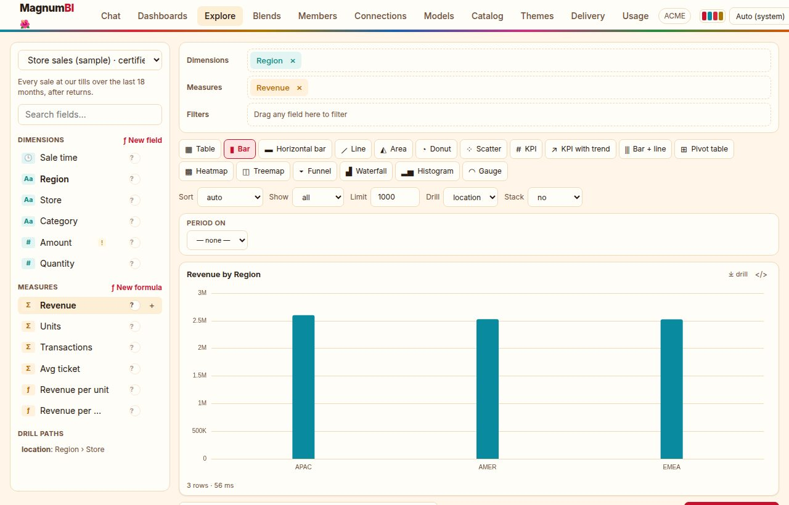

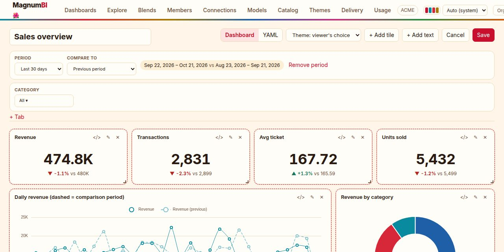

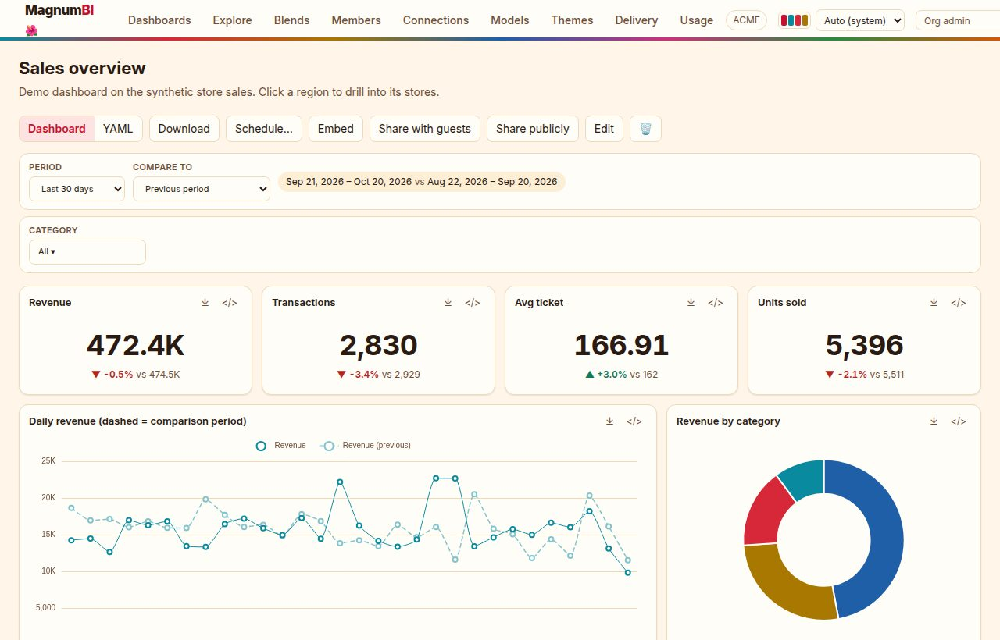
title: Sales overview
period:
model: sales
field: sold_at
current: {last_n_days: 30} # or {preset: month_to_date}, or {from: …, to: …}
compare: previous_period # or previous_year, or {from: 2025-09-01}
filters:
- {model: sales, field: category, label: Category}
tabs: [Overview, Detail] # optional; a tile without tab: is on the first
tiles:
- id: revenue
title: Revenue
type: kpi
query: {model: sales, measures: [revenue]}
layout: {x: 0, y: 0, w: 3, h: 2}
- id: revenue_by_day
title: Daily revenue
type: line
query: {model: sales, dimensions: ["sold_at:day"], measures: [revenue]}
layout: {x: 0, y: 2, w: 8, h: 5}
- {id: how_to_read, type: text, tab: Detail, text: "## How to read this\n\nRevenue is **net of returns**."}A dashboard's YAML view (Power users and up) shows this same file: edit and apply it there, or download it to keep in git. Through the API: GET/PUT /api/dashboards/{id}/yaml (with ?dry_run=1 and If-Match), GET …/history; downloads are POST …/tiles/{tile}/export (CSV) and POST …/export (zip).
Dashboards in the platform workspace act as templates: Publish… copies one into organisations.
Charts
- 17 chart types, drawn with ECharts in the theme's palette: KPIs (with a trend sparkline, or a gauge towards a target), tables and pivot tables with totals, bars (vertical, horizontal, stacked or 100%), lines, areas, bar + line combos on two scales, donuts, treemaps, funnels, heatmaps, waterfalls, histograms and scatter plots. Weekdays and months sort as on a calendar.
- Text tiles (
type: text, withtext:in markdown) hold headings and notes: how to read the dashboard, what a number means. Links go to web, mail or in-app addresses only, and HTML stays plain text. - Tabs split a long dashboard into pages. The address keeps the open tab (
?tab=Detail). - Downloads (Users and up): a tile's data as CSV or a chart as a PNG, with the filters, period and drill-down on screen; the whole dashboard as a zip of CSVs (a folder per tab). Restrictions apply as on screen, and text a spreadsheet would run as a formula stays text. Guests with the User role can download too; public links can't.
- Two measures, two scales. A line or bar chart of two measures (say, daily trips and temperature) puts the second on its own right-hand axis, named and coloured after it.
- Period comparison you can read. The previous period is drawn dashed, in a lighter (or, on dark themes, darker) shade of its measure's colour, on the same scale.
- A dashboard can pin a theme with
theme: <id>.
Viewers never send raw queries: they ask for a saved tile with their filter values, period and drill clicks, and the server rebuilds the query.
Data connections
Each organisation sets up its own connections: models name one (warehouse), and the organisation decides where that is and with which credentials. Secrets (passwords, keys) are encrypted and never shown again.
On Data › Connections (Org admins): + Add connection, choose the type, fill in where it is and its password or key, Test it, then Save. A warning lists the connections your models need that aren't set up yet.

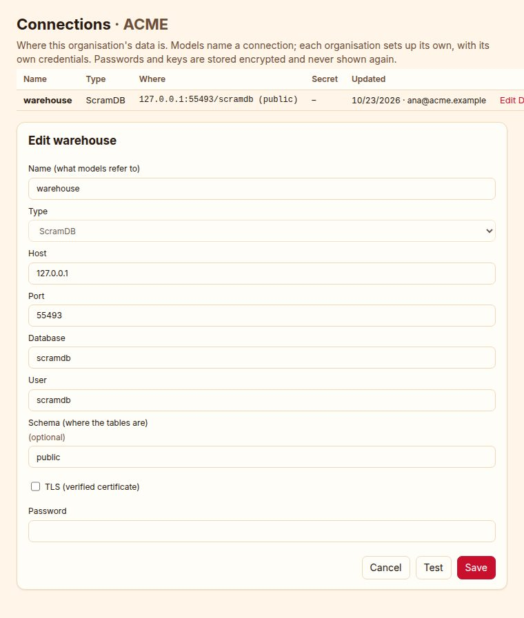
warehouse connection; Test checks it before saving.{"config": {"type": "postgres", "host": "db.acme.example", "port": 5432,
"database": "analytics", "user": "bi_reader", "schema": "sales", "tls": true},
"secret": "the password"} # write-only: never sent back{"config": {"type": "duckdb",
"tables": {"sales": "sales/*.parquet",
"orders": "iceberg:s3://acme-lake/warehouse/retail/orders"},
"s3_region": "eu-west-1"},
"secret": "{\"key_id\": \"…\", \"secret\": \"…\"}"}POST /api/connections/{name}/test checks settings without saving; GET /api/connections lists them (no secrets). Agents use the MCP tools save_connection and list_connections.
| Type | Where a table is found | Notes |
|---|---|---|
| ScramDB, PostgreSQL | The connection's schema | Read-only transactions, statement timeout, verified TLS. |
| BigQuery | The connection's project + dataset | Every query is dry-run first and refused above max_bytes_billed. |
| DuckDB | Files you list under tables:, or a .duckdb file | Parquet, CSV, JSON, Avro, Iceberg; local or on S3, GCS, HTTPS. |
DuckDB runs each query in a fresh, locked-down sandbox: only the organisation's own folders and storage prefixes are reachable, with no writes or settings changes. Addresses an organisation sets up go through the network guard: no private networks unless the server allows them.
Blends: join models across engines
A blend joins models on the fields they share, even when the data lives in different databases. Use it like any model; its fields are named model.field (e.g. taxi.trips).
On Data › Blends (Power users and up): + New blend, pick the base model (every row starts from it), then each model to join and the fields that match (a date can match at a grain, such as the hour). Choose how long results are reused, then Save and open it in Explore.

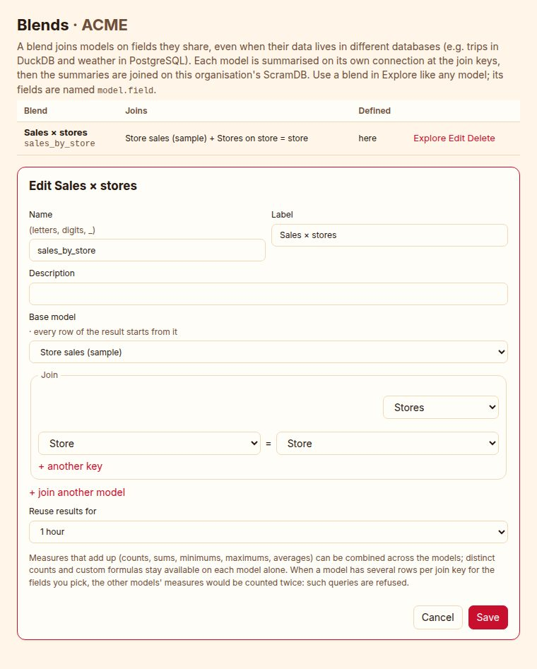
name: taxi_weather
label: Taxi trips × weather
base: taxi # every row starts from it
joins:
- model: weather
on:
- pickup_borough = borough
- pickup_at:hour = observed_at:hour # dates match at a grain
cache: 1hOr per organisation through the API: PUT /api/blends/{name} with the same fields as JSON (and ?dry_run=1).
Behind the scenes it works in two steps:
- Aggregate per engine. Each model gets its own query on its own connection, grouped by the join keys.
- Join on ScramDB. The partial results are joined in the organisation's ScramDB, then grouping, sorting, Top N and period comparison work as usual.
Limits: measures must add up (count, sum, min, max, avg), each part may return up to 1,000,000 rows, and queries that would double-count are refused with an explanation. The SQL preview in Explore shows every part and the join.
Query cache
The cache is what makes Magnum BI feel instant: a repeated question is answered from ScramDB instead of going back to your warehouse. It's built to be fast and isolated per tenant.
It's off by default, so live data stays live.
On Settings › Usage, Org admins see what's cached for each model (results, rows, hits) next to who looks at what, and clear the cache after loading new data.

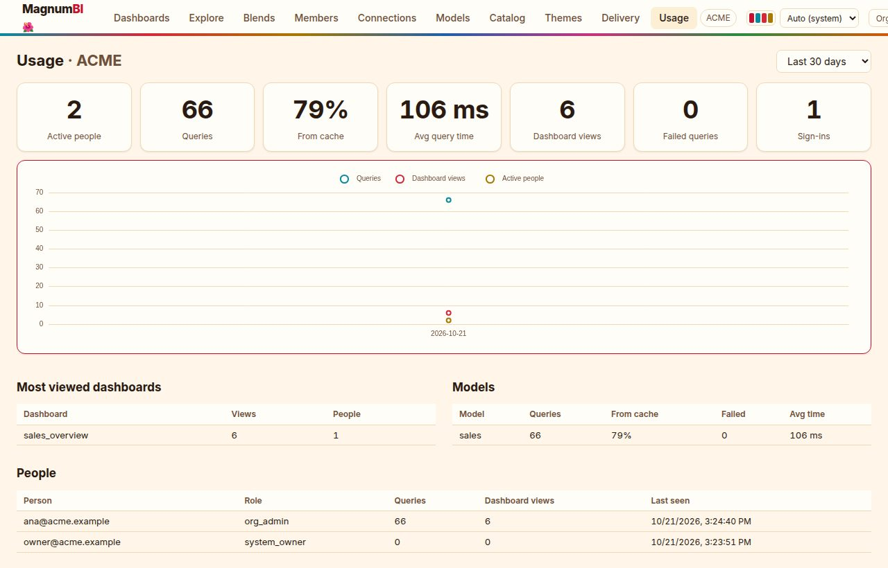
cache: 15m # any duration up to 30 daysGET /api/cache shows it, DELETE /api/cache?model=sales clears it; builders bypass it for one request with the x-magnum-refresh: 1 header.
Isolated per organisation
- Its own instance. Each organisation's cache lives in that organisation's own ScramDB instance, next to its dashboards. Nothing is shared between tenants.
- Failures stay contained. An unreachable instance only affects its own organisation (it fails closed), never sign-in or other organisations.
- Filtered per person. Entries are keyed by organisation, connection and the compiled SQL — which already contains the person's row filters and the period. People share a result only when they'd get the same rows anyway.
Built for speed
- Typed tables, not blobs. Each result is stored as a real table (
magnum_cache.r_…), the same mechanism that powers blends. - Real-world numbers. On the NYC taxi demo (208 million rows), a month takes about 1 s and all five years about 5 s; a cross-engine blend about 2 s. Cached, they're instant.
- Managed for you. Every 5 minutes expired results are dropped, and each organisation keeps at most
MAGNUM_CACHE_MAX_ROWSrows of results (5 million by default) and 2,000 results, least recently used dropped first. Org admins see and clear the cache on Settings › Usage; builders can bypass it with thex-magnum-refresh: 1header.
Embedding
Put a live dashboard in your intranet or product, filters included.
Embed on a dashboard (Users and up) gives both snippets, ready to copy, and a preview of the embedded view.

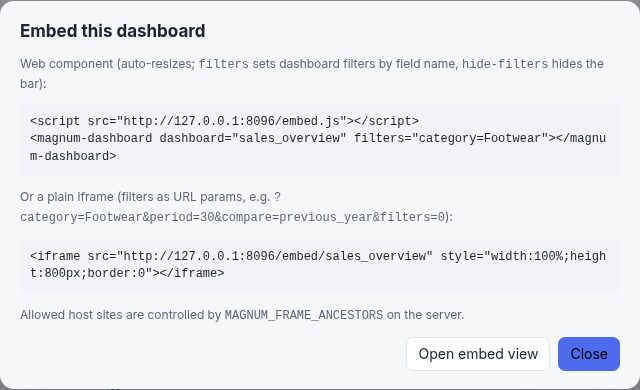
<script src="https://bi.example.com/embed.js"></script>
<magnum-dashboard dashboard="sales_overview" filters="category=Footwear"></magnum-dashboard>Or an iframe on /embed/<id>, with filters as URL parameters (?category=Footwear&period=30&filters=0).
Allow host pages with MAGNUM_FRAME_ANCESTORS; for embeds on other sites, set MAGNUM_COOKIE_SAMESITE=none and serve over https.
Public links
Org admins can share a dashboard with anyone who has the link, without an account, served from a cache so your data warehouse can't be overloaded.
Share publicly on a dashboard: choose how long results are kept (5 minutes to a day), make the link, then copy it or show its QR code. The same dialog lists the dashboard's links and removes them.

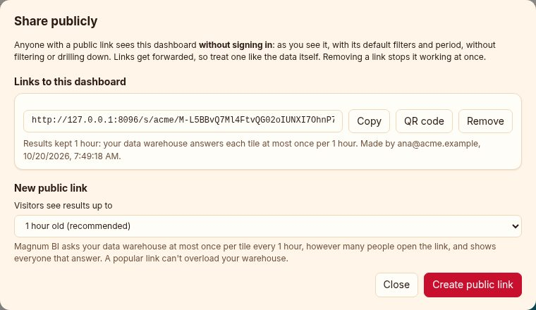
{"cache_seconds": 3600} # 300, 900, 3600, 21600 or 86400
# no cache: {"cache_seconds": 0, "accept_uncached_risk": true}GET …/share-links lists them (with their address, for Org admins), DELETE /api/share-links/{id} removes one.
- Visitors see the dashboard as saved: its default filters and period, without filtering or drilling down. They see it as the link's maker would, as a Viewer: the maker's row filters apply, so a link never shows more than they may see. If the maker leaves the organisation or is disabled, the link stops working.
- The warehouse answers each tile at most once per cache period, however many people open the link, and visitors arriving at the same moment wait for that one query. If the kept results can't be read, the link fails rather than ask the warehouse.
- No cache is possible, never by accident. It sends every visit to the warehouse, so anyone with the link could overload it or run up its bill. Magnum BI spells out the risks and only makes the link once they're accepted and the dashboard's id is typed.
- Removing a link stops it at once. Links aren't indexed by search engines (
noindex), andMAGNUM_PUBLIC_LINKS=0turns them off for the whole server.
Guest links
Power users and up can share a dashboard with colleagues or people outside the organisation through a link and a password. Guests need no account.
Share with guests on a dashboard: choose the guests' role, how long the link works, a password (or let Magnum BI make one up) and, if you like, limits on what they see. The dialog lists the dashboard's guest links, to copy or remove.

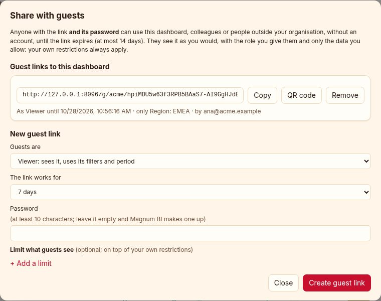
{"expires_in_hours": 168, # 1 to 336 (14 days)
"password": "", # empty: made up and returned once
"role": "viewer", # viewer, user or power_user, at most yours
"filters": [{"model": "sales", "dimension": "region", "values": ["EMEA"]}]}GET …/guest-links lists them, DELETE /api/guest-links/{id} removes one.
- Their role is yours or lower, Viewer by default: Viewers use the dashboard's filters and period, Users also drill down and download the data, Power users also see each tile's SQL. No editing, Explore or sharing. If you drop below Power user or leave, your links stop working.
- They see only what you allow: your own restrictions, plus the link's limits on any field of the dashboard's models. Limits only narrow, on every tile, pick list and drill-down.
- Every link expires, after 1 hour to 14 days, never longer. Removing it ends it at once, even for guests who already opened it.
- The password is shown only once: send it separately from the link. It opens the link in that browser for up to 12 hours; wrong passwords lock the link for 15 minutes after 5 tries.
Email & webhooks
Each organisation, and the platform workspace, has its own mail server and webhooks for the reports and alerts it sends. They're kept in its own database, with secrets encrypted for it, and nothing is shared: an organisation without a mail server can't send email, even if the platform has one.
On Settings › Email & webhooks (Org admins; system owners in the platform workspace): set up the mail server and Send me a test; add Slack, Teams or other webhooks and Test them. The same page lists every scheduled report and alert, to pause or remove.

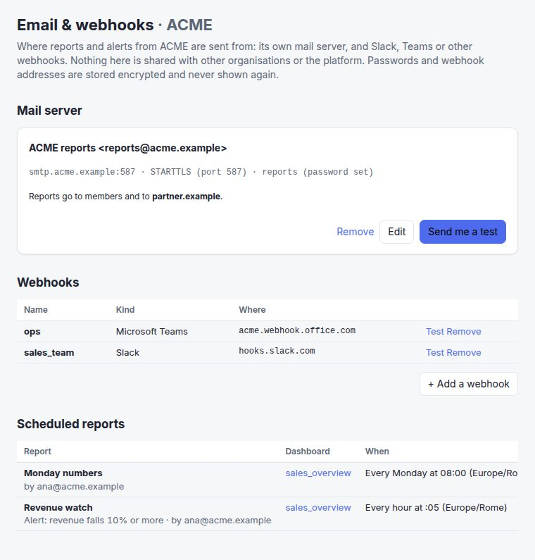
{"host": "smtp.acme.example", "port": 587, "security": "starttls", # or tls, none
"username": "reports", "password": "…", # write-only; omit to keep the stored one
"from": "ACME reports <reports@acme.example>",
"allowed_domains": ["partner.example"]} # reports may also go to these{"kind": "slack", "url": "https://hooks.slack.com/services/…"} # slack, teams or webhookPOST /api/delivery/mail/test and POST /api/delivery/webhooks/{name}/test send a test; GET /api/delivery shows the settings (no secrets, only a webhook's host).
- Mail server: STARTTLS or TLS (or none, for an internal relay without a password). A test email goes to the person asking, and only to them.
- Webhooks: Slack, Microsoft Teams, or any address taking JSON
{title, text, link}. The address is a secret: only its host is shown again. - Like connections, they go through the network guard: private addresses only where the server allows them, https for webhooks, no redirects.
Scheduled reports & alerts
Send a dashboard every hour, day, week or month at a local time, or a message when a number crosses a line, through your organisation's own mail server and webhooks.
Schedule… on a dashboard (Users and up) lists its reports and alerts and makes new ones: a name, when, what it sends, and to whom. The filters and period on screen go with it. Send now tries one at once.

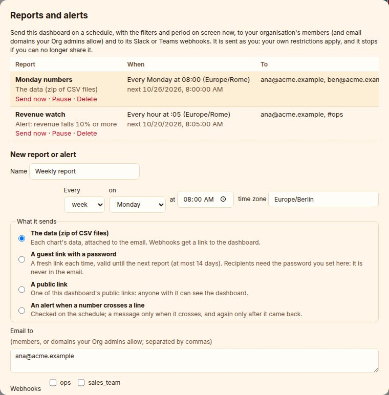
{"name": "Monday numbers", "format": "csv", # csv, signed, public or alert
"when": {"every": "weekly", "day": 1, "at": "08:00", "timezone": "Europe/Rome"},
"recipients": ["ana@acme.example"], "webhooks": ["sales_team"]}
{"name": "Revenue watch", "format": "alert",
"when": {"every": "hourly", "at": "00:05", "timezone": "Europe/Rome"},
"alert": {"tile": "revenue", "op": "falls_by", "value": 10}, # above, below, rises_by, falls_by
"recipients": ["ana@acme.example"], "webhooks": ["ops"]}GET /api/schedules lists every one (Org admins); POST /api/schedules/{id}/run sends one now, PUT …/active pauses or resumes it, DELETE removes it.
- The data: a zip of each chart's CSV, attached to the email (up to 10 MB; beyond that, the email links to the dashboard). Webhooks get a link to the dashboard.
- A guest link with a password (Power users and up): a fresh link each time, working until the next report (at most 14 days). The password is never in the email.
- A public link (Org admins): one of the dashboard's public links.
- An alert: a number on the dashboard (a KPI tile) above or below a value, or rising or falling by a percentage on the comparison period. A message goes out only when it crosses the line, and again only after it came back.
Reports and alerts go only to your members, people of the email domains your members join by, and the domains your Org admins allow on Settings › Email & webhooks, checked when made and on every run. They run as their maker, with their restrictions, and pause when the maker can no longer send them or after 5 failed runs. Every email has a link to stop receiving it. Set MAGNUM_PUBLIC_URL so the links in them work.
Themes & brand colours
The default themes are Aloha (light) and Aloha night (dark), the ones this site uses. Everyone can pick any theme for themselves, and each organisation can have its own, in its company's colours. Built-in themes never change, so a theme id always looks the same.
On Settings › Themes (Org admins): Start from it on any theme opens the editor (colours, chart palette, corners, font) with a live preview and contrast checks. Pick the organisation's default light and dark themes, Export CSS for your own site, or import your design team's tokens.

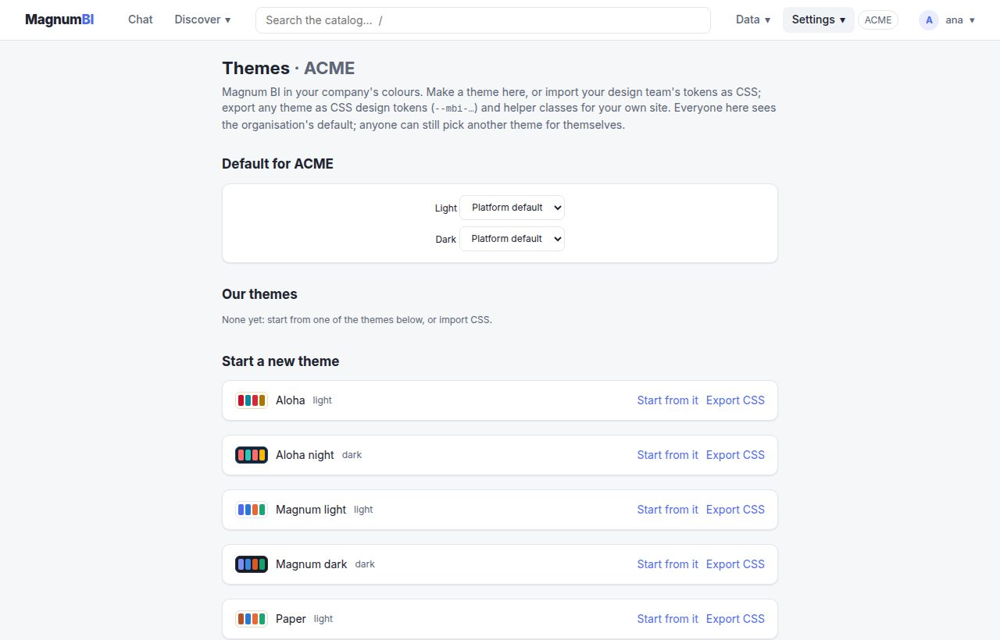
id: acme
label: ACME
mode: light # or dark
colors: {bg: "#f7f7fb", surface: "#ffffff", surface_2: "#eef0f6", border: "#d9dce8",
text: "#1b1d29", text_muted: "#5b6075", accent: "#3b4fe0", accent_soft: "#e3e7ff",
good: "#13804f", bad: "#c4314b"}
palette: ["#3b4fe0", "#e0703b", "#2aa198", "#b5379b", "#7a8b1f"]
font: Inter, system-ui, sans-serif
radius: 10An organisation's own themes and defaults: GET/PUT /api/org-themes ({"themes": […], "default_light": "acme", "default_dark": null}, with ?dry_run=1 and If-Match). POST /api/themes/import turns CSS tokens into a theme.
- Contrast checks (WCAG): text 4.5:1, chart colours 3:1.
- Export CSS gives design tokens (
--mbi-accent,--mbi-surface,--mbi-chart-1…) and helper classes (.mbi-card,.mbi-button-primary,.mbi-kpi…); import reads only validated token values back. - A dashboard can pin a theme with
theme: <id>.
AI agents & MCP
Agents, scripts, CI jobs and notebooks use the same API as the UI, so they get the same rules, permissions and audit trail as people do.
API tokens
Security (next to your name), then API tokens: say what will use it, read-only or read & write, and how long it lasts. The token is shown once, with the setup for each MCP client.

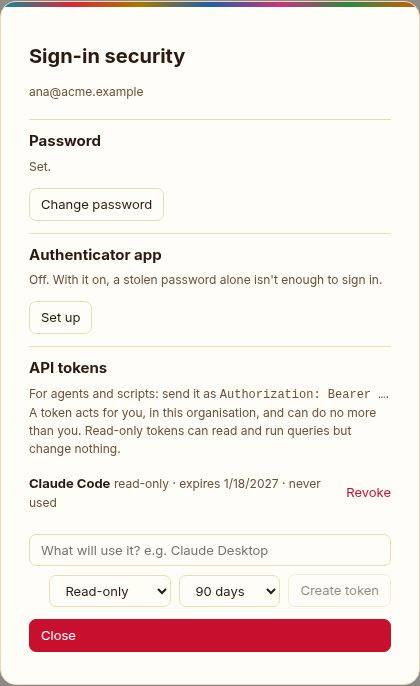
curl -H "Authorization: Bearer mbi_…" https://bi.example.com/api/dashboardsTokens are made by a signed-in person (a token can't make another). GET /api/tokens lists yours (Org admins: ?all=true), DELETE /api/tokens/{id} revokes one.
- It acts for the person who made it, in their organisation, with at most their role (or a lower one you choose). Row filters and organisation isolation apply as usual.
- Read-only (reading, queries, dry runs) or read & write. It always expires: 90 days by default, at most 365. The secret is shown once; only a hash is stored.
- Tokens can't make other tokens or change how anyone signs in. Revoke one, or disable the account, and it stops at once. Org admins see and revoke every token in their organisation.
- Everything a token does is in the usage log as
token:<name>. Policies can switch tokens off for the platform or an organisation.
MCP endpoint
POST /api/mcp lets Claude Code, Cursor, Claude Desktop and other MCP clients use Magnum BI as a tool. Making a token shows the setup for each client, for example:
claude mcp add --transport http magnum-bi https://bi.example.com/api/mcp \
--header "Authorization: Bearer mbi_…"The agent can then search the data catalog and read its glossary, owners and lineage, list and describe models, run queries (with formulas, checked first) and preview their SQL, read, validate, save and delete dashboards (with history), schedule reports and alerts (and pause, resume, send or delete them), share formulas with the organisation, and manage blends, connections, members and themes. Give it your company's CSS design tokens and it can turn them into the organisation's default theme. It can also read usage summaries. Agents only see the tools their token allows; read-only tokens get no writing tools. Each tool calls the same API handler a browser would, so permissions and checks are the API's own.
Safety nets for changes
- Dry runs. Add
?dry_run=1when saving a dashboard, blend, members list, connection, your own model, shared formula, catalog entry, organisation themes, chat settings, mail server, webhook, report or setup as code: everything is checked and warnings come back (for example, a tile on a field that doesn't exist), but nothing is saved. Read-only tokens may make them. - Versions. Reads of a dashboard, the members or the organisation themes return a
version. Send it back asIf-Matchand a save is refused (409, with the current version) if someone changed it meanwhile, instead of silently overwriting their work. Overwritten and deleted dashboards stay in their history.
Your setup as code
What your organisation sets up in the app can live in git as YAML files, and files can be applied back, like terraform: export, review the plan, apply. Org admins only.
Settings › Code downloads your setup as a zip of files. To apply files, choose their folder: the plan shows what would be created (+), changed (~) or deleted (−), with any problem next to its file and a field for a secret where one belongs. Apply when it's right.

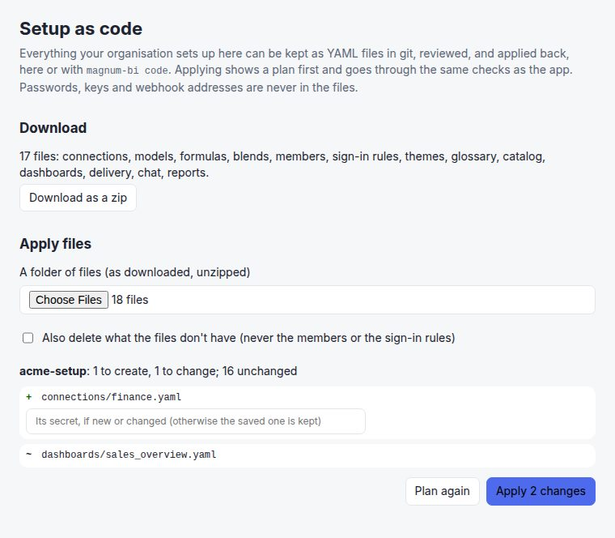
export MAGNUM_URL=https://bi.example.com MAGNUM_TOKEN=mbi_…
magnum-bi code export ./setup # your setup, as files: commit them
magnum-bi code plan ./setup # what applying would change
magnum-bi code apply ./setup --prune # shows the plan, asks, applies (--yes in CI)Secrets come from variables named after their file: MAGNUM_SECRET_CONNECTIONS_WAREHOUSE, MAGNUM_SECRET_MAIL… The API underneath: GET /api/code (?format=zip) and POST /api/code with {"files": {…}, "secrets": {…}} (?dry_run=1 for the plan).
- The files, applied in this order:
connections/<name>.yaml,models/<name>.yaml(your own models),formulas/<model>/<name>.yaml,blends/<name>.yaml,members.yaml(people, roles and row filters),sign_in.yaml(sign-in rules and single sign-on),themes.yaml,glossary/<name>.yaml,catalog/<model>.yaml(owner, stewards, status, documentation),dashboards/<id>.yaml,mail.yaml,webhooks/<name>.yaml,chat.yamlandreports/<dashboard>/<name>.yaml. - The plan (
?dry_run=1) lists what would be created or updated, each checked as if it were saved, against your organisation as the files will leave it: a model on a connection the same files add is checked on that connection. It needs a read & write token: checking files may connect to the addresses they name. - Applying goes through the same checks and permissions as the app. With any problem, nothing changes. Files you leave out are kept, unless you add
?prune=1(never the members or the sign-in rules). Files that would leave your organisation without an Org admin are refused, and people stay in one organisation. A changed report is replaced, made by whoever applies it. - Secrets are never in the files. New passwords, keys and webhook addresses travel apart (a field on the plan, or a variable); the saved ones are kept otherwise, but never sent to a new address: change a host and its password is needed again. They're sealed like everything the app stores, and never sent back.
Organisations & roles
Each organisation has its own members, connections and dashboards, none visible to other organisations. Each can have its own ScramDB instance for dashboards and cache; if it's unreachable, only that organisation is affected.
On Settings › Members (Org admins): add people by email with a role, give someone personal filters (they only narrow), let everyone from your email domain in with a default role, or set a one-time password for someone. The table at the top shows what each role can do.

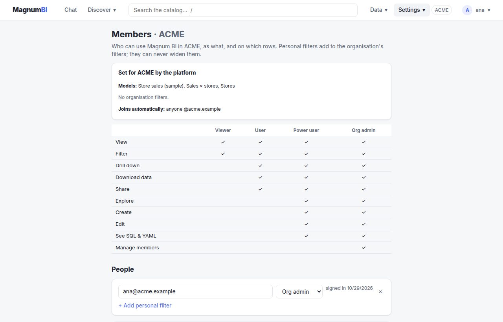
System owners create organisations and give each its own database on Settings › Organisations.
{"default_role": "viewer", # people who join by domain
"users": {
"ana@acme.example": "org_admin",
"ben@acme.example": "power_user",
"dev@acme.example": {"role": "viewer",
"filters": [{"model": "sales", "dimension": "region", "values": ["EMEA"]}]}}}With ?dry_run=1 and If-Match; agents use get_members and save_members. Organisations: GET/PUT /api/platform (system owners), magnum-bi org set-database <org>. On a first start, project/access.yaml can bring the initial organisations and members.
| Role | Can |
|---|---|
| Viewer | View dashboards, use their filters and the period picker |
| User | + drill down, embed, download data, schedule reports and alerts |
| Power user | + create / edit / delete dashboards, Explore, see SQL and YAML, guest links |
| Org admin | + manage members, roles, personal filters, connections, models, delivery and public links |
| System owner | Everything, in every organisation |
- People join as listed members, or automatically by email domain with a default (non-admin) role.
- Row filters only narrow what someone sees. Anything misconfigured fails closed.
- Anyone can preview a lower role (“view as”), never a higher one.
- Settings › Usage shows Org admins sign-ins, queries, dashboard views, cache hits and failures for their organisation, and system owners for the whole platform. Recording never slows a request down.
Sign-in
The sign-in page asks for the email first, then offers the ways that person's organisation allows. Every method ends in the same secure server-side session (an HttpOnly cookie).
| Method | How it works |
|---|---|
| Password on by default | At least 10 characters, Argon2id hashes, 15-minute lockout after 5 failures. Set from the server (magnum-bi user set-password), by an Org admin as a one-time password, or by the person under Security. |
| Authenticator codes | Two-factor codes (TOTP) from any authenticator app after the password, set up under Security with a QR code, plus 10 one-time recovery codes. |
| Passkeys | Touch ID, Windows Hello, phones and security keys (WebAuthn), added under Security. |
| Google optional | Set MAGNUM_GOOGLE_CLIENT_ID and MAGNUM_GOOGLE_CLIENT_SECRET. Only Google-verified emails are accepted. |
| Your organisation's single sign-on | Any OpenID Connect provider: Microsoft Entra ID, Okta, Keycloak, Auth0, Google Workspace and more. Org admins set it up under Members › Sign-in and map provider groups to roles. It only signs in addresses on the organisation's own domains. |
| API tokens | For agents and scripts; see AI agents & MCP. |
Policies
On Settings › Members › Sign-in, Org admins choose the ways their people may sign in (within what the platform allows), require an authenticator code with passwords, and set up their single sign-on provider. Each person adds passkeys and an authenticator app under Security.

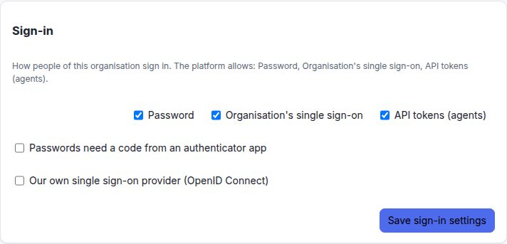
{"sign_in": {"methods": ["password", "passkey", "oidc", "token"], # and google
"require_two_factor": true},
"oidc": {"label": "ACME (Microsoft)", "issuer": "https://login.microsoftonline.com/…/v2.0",
"client_id": "…", "client_secret": "…", # write-only
"group_roles": {"BI admins": "org_admin", "Analysts": "power_user"}}}Accounts from the server: magnum-bi user set-password | disable | enable <email>.
Which methods people may use, and whether passwords need an authenticator code, is set at three levels: the platform, the platform for one organisation, and the organisation itself. Organisations choose within the platform's rules and can only tighten them. Policies are checked at sign-in and on every request: a stricter policy signs out sessions that no longer meet it.
An account whose password was issued by an Org admin is bound to that organisation: with that password it can never act as a system owner or in another organisation. Disable an account (and end its sessions) with magnum-bi user disable <email>.
Deploying
Docker image
Releases are published as ghcr.io/giobinda/magnum-bi (latest and X.Y.Z; edge follows the main branch). It's one image of about 150 MB with the server, the CLI, the built UI and the project files. It runs as an unprivileged user and keeps DuckDB files in /data. Build your own with docker build -t magnum-bi ..
Docker Compose: one machine
compose.yaml runs Magnum BI with its own ScramDB (see Quick start). MAGNUM_HTTP_PORT changes the port. On first start, with no accounts yet, the admin gets a one-time password, printed in the log or set with MAGNUM_ADMIN_PASSWORD. For a shared server, put https in front and set MAGNUM_PUBLIC_URL and MAGNUM_ENV=production.
Kubernetes: the Helm chart
Published as oci://ghcr.io/giobinda/charts/magnum-bi:
# try it: bundled ScramDB, no ingress (kubectl port-forward svc/bi-magnum-bi 8000:80)
helm install bi oci://ghcr.io/giobinda/charts/magnum-bi --set production=false
# for real: https address, ingress, your own ScramDB (a Secret with the key database-url)
helm install bi oci://ghcr.io/giobinda/charts/magnum-bi \
--set publicUrl=https://bi.example.com --set ingress.enabled=true \
--set admin.email=you@example.com --set database.existingSecret=bi-scramdb
helm test bi- Secret key handled for you. The chart generates it on install and keeps it on upgrade, or brings your own with
secretKey.existingSecret. - Locked down. The bundled ScramDB is reachable only from Magnum BI (a NetworkPolicy), and the pod has a read-only root filesystem.
- Refuses what can't work. For example production without an https
publicUrl, or several replicas on a ReadWriteOnce volume. - Any
MAGNUM_*setting goes inenvorsecretEnv; see the chart'svalues.yaml.
The server waits up to a minute for ScramDB at start instead of failing, so the order containers start in doesn't matter.
Configuration
Everything is set with environment variables. For local development, put them in .env.local.
| Variable | Default | Purpose |
|---|---|---|
MAGNUM_DATABASE_URL | postgresql://scramdb@127.0.0.1:5432/scramdb | The primary ScramDB |
MAGNUM_SECRET_KEY | Encrypts connection strings (magnum-bi gen-key); required in production | |
MAGNUM_SECRET_KEY_FILE | Read the key from this file instead; created (mode 0600) on first start if missing | |
MAGNUM_INITIAL_PASSWORD | First start with no accounts: the first system owner's one-time password (otherwise generated and logged) | |
MAGNUM_PUBLIC_URL | Public https address | |
MAGNUM_ENV | development | production / staging refuse unsafe settings |
MAGNUM_SYSTEM_OWNERS | Comma-separated emails, until organisations are first saved | |
MAGNUM_HOST / MAGNUM_PORT | 127.0.0.1 / 8000 | Listen address |
MAGNUM_PASSWORD_LOGIN | 1 | Password sign-in on/off |
MAGNUM_PUBLIC_LINKS | 1 | Org admins may share dashboards publicly; 0 forbids it |
MAGNUM_GOOGLE_CLIENT_ID / _SECRET / _HD | Google sign-in | |
MAGNUM_SESSION_HOURS | 12 | Session lifetime |
MAGNUM_COOKIE_SAMESITE | lax | none for cross-site embeds (https only) |
MAGNUM_FRAME_ANCESTORS | 'self' | Which pages may embed dashboards |
MAGNUM_TRUSTED_ORIGINS | Extra origins allowed to send POST/PUT/DELETE | |
MAGNUM_CLIENT_IP_HEADER | Behind a proxy: header holding the client address | |
MAGNUM_DUCKDB_DIR | data/duckdb | DuckDB files, one folder per organisation |
MAGNUM_DUCKDB_INSTALL_EXTENSIONS | 1 | Allow downloading DuckDB extensions |
MAGNUM_ALLOW_PRIVATE_CONNECTIONS | 1 (0 in production) | Let connections reach private networks |
MAGNUM_CONNECTION_ALLOWED_HOSTS | Private hosts connections may reach anyway | |
MAGNUM_USAGE_RETENTION_DAYS | 400 | How long usage events are kept |
MAGNUM_CACHE_MAX_ROWS | 5000000 | Rows of cached results each organisation keeps (least recently used go first) |
MAGNUM_DB_AUTO_MIGRATE | 1 | Migrate ScramDB at startup |
MAGNUM_PROJECT_DIR / MAGNUM_FRONTEND_DIST | project / frontend/dist | Paths |
MAGNUM_LOG | magnum_bi=info | Log filter (magnum_bi is the program's module name) |
MAGNUM_URL / MAGNUM_TOKEN | For magnum-bi code on your computer or in CI: the server's address and an API token |
Security
- Server-enforced. Every rule is checked by the server; the UI only hides what a role can't use.
- Safe connections. Organisations' connections can't reach the platform's internals: private, loopback and cloud-metadata addresses are refused outside development unless allowlisted, and DNS answers are pinned.
- Sign-in protection. 5 failures lock an account and 20 lock a client address for 15 minutes. Failed sign-ins are recorded.
- CSRF. State-changing requests must come from Magnum BI's own origin, on top of
SameSite=LaxHttpOnly cookies. - Headers. Strict CSP,
nosniff, referrer policy, HSTS on https,no-storeon the API. - Limits. Request bodies up to 1 MB, YAML files up to 512 KB.
- Quiet errors. Database details are only shown to roles allowed to see SQL; others get a reference to look up in the server log.
- Sealed secrets. Connection credentials, organisation database addresses, single sign-on client secrets, authenticator secrets, mail server passwords, webhook addresses and chat keys are encrypted with AES-256-GCM, bound to their organisation. Passwords (accounts, guest links) are stored as Argon2id hashes, sessions and API tokens as SHA-256.
- Strong sign-in. Authenticator codes, passkeys and single sign-on, with policies that can require two factors. API tokens are scoped, expiring and revocable.
Bigger demo: NYC taxi trips × weather
Want to see it at scale? One command sets up New York yellow taxi trips (NYC TLC open data, about 3.5 million trips a month) with the hourly weather in each borough:
make demo # platform workspace, 13 months
make demo ORG=globex MONTHS=60 # an organisation, five yearsSystem owners can also run it from Settings › Organisations › Demo data, with progress shown as it goes. It:
- finds the latest published month and downloads and cleans each month with DuckDB (about 60 MB a month; months already there are skipped, so running it again only adds new ones);
- fetches the weather and creates the DuckDB connections
nyc_taxiandmeteo; - imports the dashboards
nyc_taxiandnyc_taxi_weather, set to the latest month and the same month a year earlier.
Run it in an organisation with its own ScramDB to get the query cache. For a two-engine blend, load the weather into PostgreSQL and point the meteo connection there.
A tile takes about a second for a month; a blend of a month of trips with the weather, compared with a year earlier, about 2 s. Cached, they're instant. Weather data: Open-Meteo, ERA5 reanalysis, CC BY 4.0.
Alpha & roadmap
Magnum BI is an early alpha. The features on this page work and are covered by tests, but expect changes before a stable release: configuration variables, API shapes and YAML formats in particular, without an upgrade path guaranteed. It's for trying out and pilots, not yet for production. Pin a version, read the changes before upgrading, and please report anything that breaks.
Next, roughly in order:
- More connectors: Snowflake, MySQL and more.
- TLS to ScramDB for the platform's own databases (data connections already support it).
License
Magnum BI is © 2026 Giovanni Andrea Binda and free software under the GNU Affero General Public License v3.0 (AGPL-3.0-only), with two additional terms. The full text is in LICENSE and NOTICE in the repository.
| If you… | Then |
|---|---|
| Use it in your company, even a profitable one | Go ahead. Nothing to ask or pay. |
| Install and run it for clients | Go ahead. |
| Change it for your own use | Go ahead. You don't have to publish changes you only use yourself. |
| Offer a modified version to others over a network (e.g. a hosted service) | Publish your changes under the AGPL. |
| Fork it | Keep the “Powered by Magnum BI” credit visible and give the fork its own name. |
Additional terms
- Attribution. The notice “Powered by Magnum BI · © Giovanni Andrea Binda” in the app's footer must stay reasonably visible in every copy and modified version. Embedded dashboards are exempt.
- Trademarks. The license doesn't cover the Magnum BI name or logo. You can say your product is based on Magnum BI, but not use the name for a product, service or fork without permission (
TRADEMARKS.md). To ask, write to gbinda@pm.me.